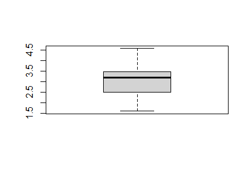

Tiramisu
Home

Description
A dessert with ladyfinger cookies, mascarpone, coffee, and chocolate.
Ingredients
- 6 egg yolks
- 1 1/4 cups white sugar
- 1 1/4 cups mascarpone cheese
- 1 3/4 cups heavy whipping cream
- 2 (12 ounce) packages lady fingers
- 1/3 cup coffee flavored liqueur
- 1 teaspoon unsweetened cocoa powder, fo dusting
- 1 (1 ounce) square semisweet chocolate
Steps
- Gather all ingredients.
- Combine egg yolks and sugar in the top of a double boiler, over boiling water. Reduce heat to low, and cook for about 10 minutes, stirrinf constantly. Remove from hear and whip yolks until thick and lemon-colored.
- Add mascarpone to whipped yolks. Beat until combined.
- In a separate bowl, whip cream to stiff peaks. Gently fold into yolk mixture and set aside.
- Split the lady fingers in half, and line the bottom and sides of a large glass bowl. Brush with coffee liqueur.
- Spoon half of the cream filling over the lady fingers.
- Repeat ladyfingers, coffee liqueur and filling layers.
- Garnish with cocoa and chocolate curls. Refrigerate several hours or overnight.
- Enjoy!